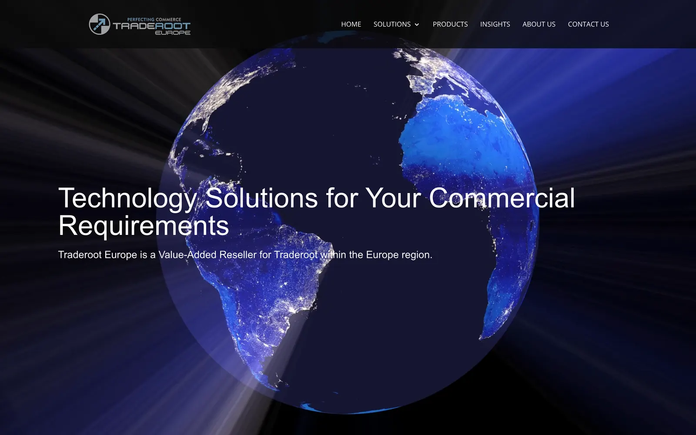
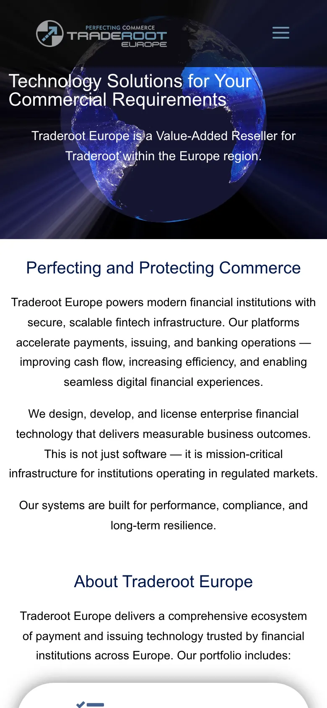
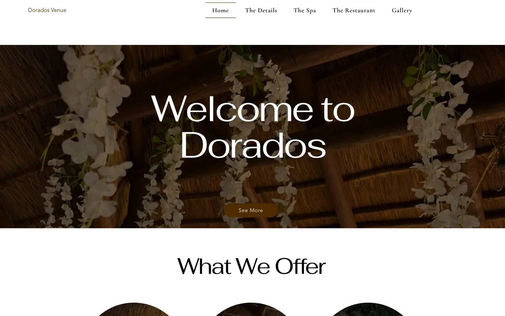
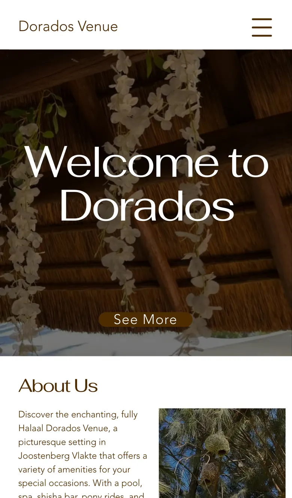
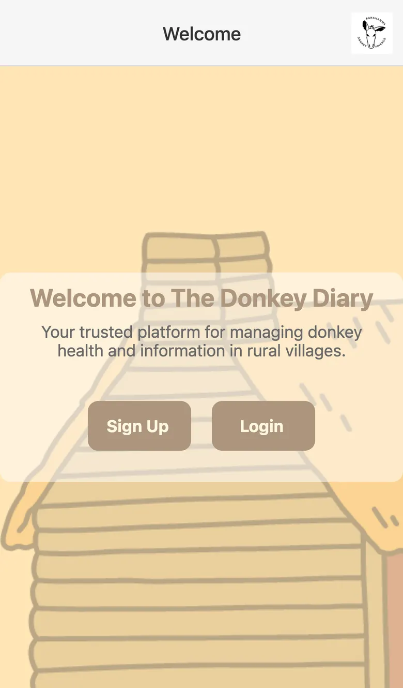
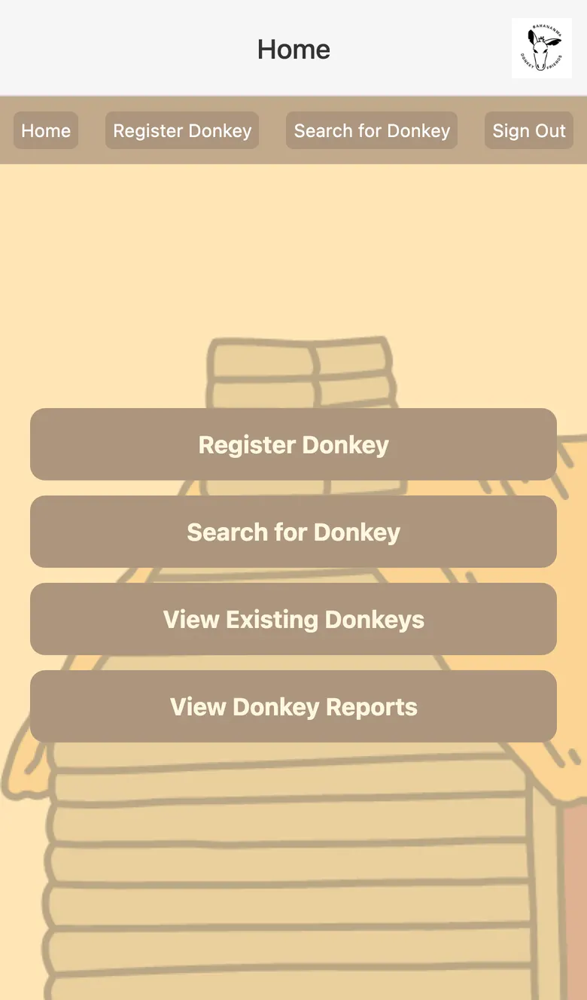
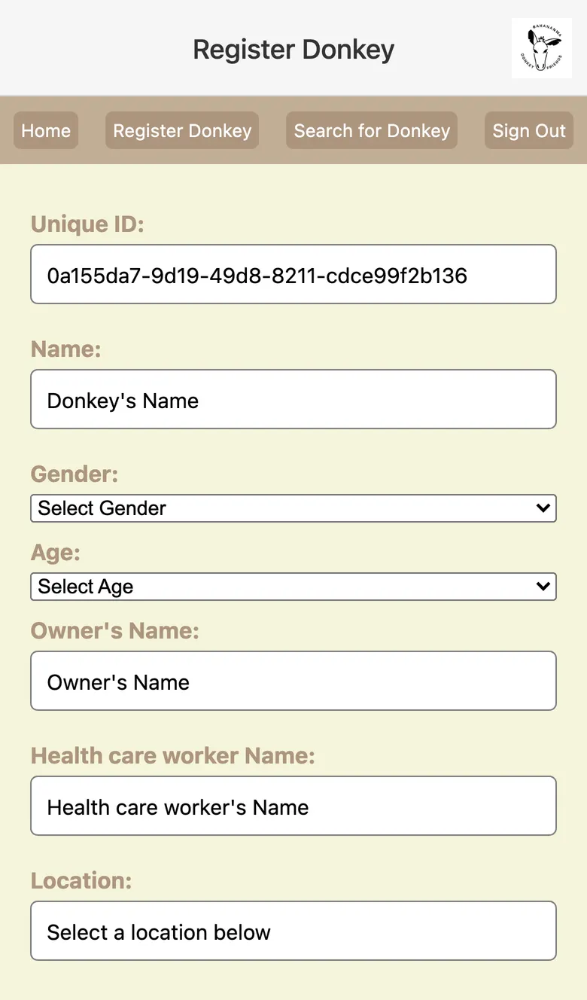
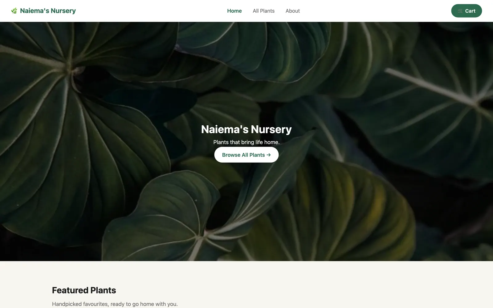
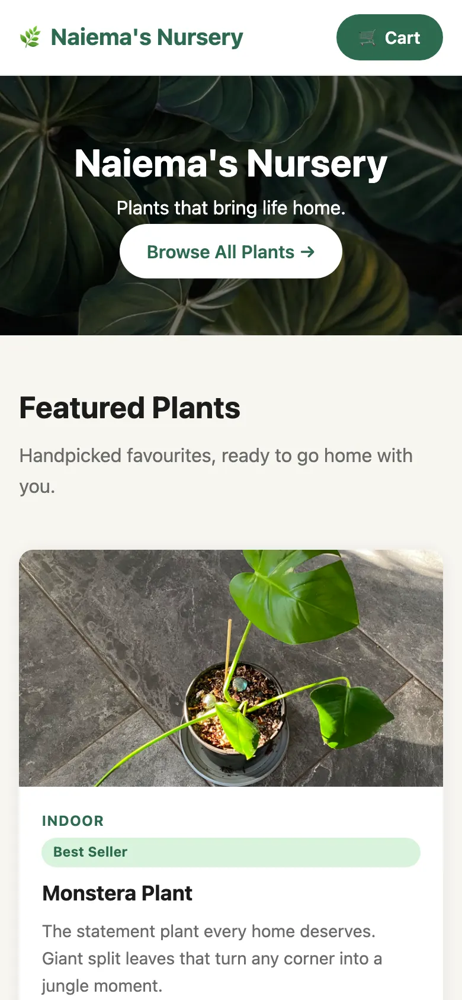

Traderoot Europe
A full redesign of the site for Traderoot's European business, with a new visual identity, layout and messaging.
Visit traderooteurope.comFrontend developer building fintech interfaces and client websites in Cape Town.
I am a frontend developer at Traderoot Technologies, where I lead the development of fintech interfaces for Core Accounts and Electronic Value Distribution.
I am also the co-founder of Z&A Digital, through which I design and deliver websites for clients on WordPress and Wix. I hold a Bachelor of Social Science in Informatics and Psychology from the University of Cape Town.


A full redesign of the site for Traderoot's European business, with a new visual identity, layout and messaging.
Visit traderooteurope.com

A venue hire website that puts the gallery, pricing and services in one place for people planning an event.
Visit doradosvenue.com


Top 17 project, UCT 2024
A mobile app for tracking donkey health in rural villages.
It is built to use little data and to work with poor connectivity, and it tags records with a location and supports image uploads.
View the code on GitHub

A plant shop site that shows which plants are in stock, with care tips for each one.
A personal project that is still in progress.
Visit the live siteNov 2025 to present
Traderoot Technologies, full-time
Dec 2024 to present
Z&A Digital, self-employed
May 2025 to Aug 2025
Designer Closets & Cabinets, contract
Feb 2024 to Oct 2024
University of Cape Town, part-time
I am a frontend developer based in Cape Town. My degree combines Informatics and Psychology, and I apply both in my work: sound engineering on one side, and close attention to the people who use the interfaces I build on the other.
At Traderoot Technologies I build and test fintech interfaces alongside the backend team. Through Z&A Digital I take client websites from the first conversation through to launch. Before this, I served as Deputy Head Tutor for Information Systems at the University of Cape Town.
University of Cape Town, graduated 2026
I am open to full-time roles, freelance work and collaborations.
Azraa.stemmet04@gmail.com